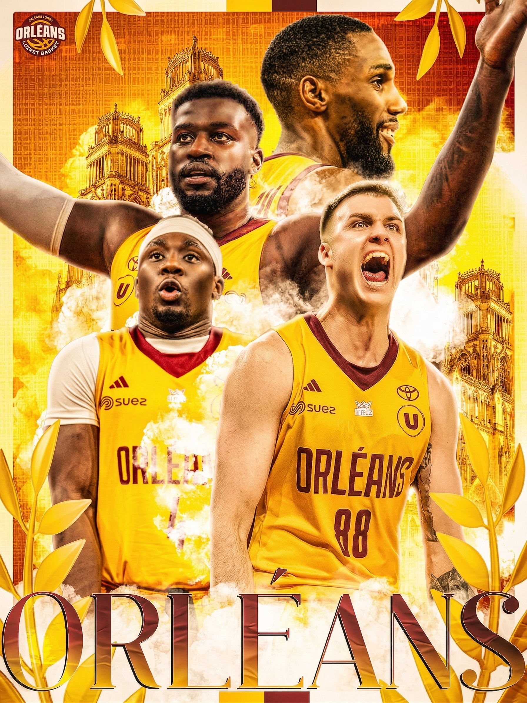

Projet 03 — Direction artistique
Affiche OLB
Celui-ci, personne ne me l'a demandé. C'est un projet personnel, et c'est justement ce qui en fait son intérêt : je veux faire du key art — ces affiches « clé » qui portent l'identité visuelle d'un film ou d'une équipe — pour le cinéma comme pour le sport. Plutôt que d'attendre une commande, je me fabrique mes propres briefs pour construire ce style. Ici, l'équipe d'Orléans Loiret Basket.
Concevoir une affiche sportive percutante : mettre en scène les joueurs comme des héros, ancrer l'image dans la ville d'Orléans, et trouver une direction artistique qui respecte les codes du club tout en ayant un vrai parti pris graphique.

Tout s'est joué dans la composition multi-calques sous Photoshop. J'ai détouré les joueurs pour les isoler, puis je les ai intégrés dans une scène construite : la cathédrale d'Orléans en arrière-plan pour ancrer le territoire, de la fumée et des lauriers dorés pour la dimension épique et la victoire.
Le gros du travail a été l'harmonisation colorimétrique : faire en sorte que des photos d'origines différentes semblent appartenir à la même image. Je suis resté fidèle à la palette du club (or et bordeaux), en jouant sur la lumière et le contraste pour diriger le regard. Enfin, une typographie monumentale « ORLÉANS » vient sceller le tout, à la manière d'une affiche de film.
L'affiche tient la promesse du key art : une image dense, lisible et spectaculaire. Je considère maîtriser les fondamentaux — détourage, composition, retouche et harmonisation colorimétrique — et surtout l'affirmation d'une démarche personnelle : je sais où je veux aller esthétiquement.
Ma piste d'amélioration est moins technique qu'artistique : élargir mes références au-delà de l'effet « épique » et travailler une typographie plus personnalisée (lettrage sur-mesure plutôt que police existante) pour pousser encore la signature visuelle.